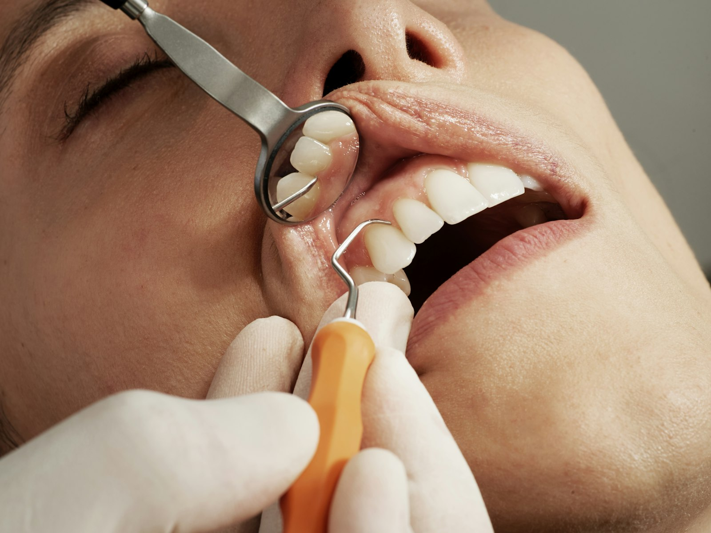
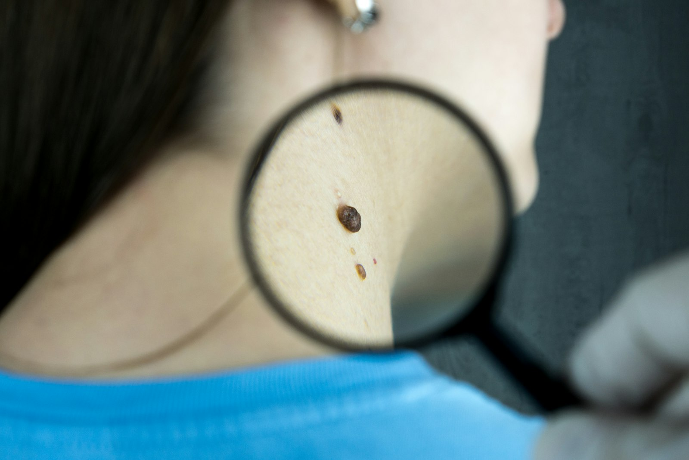
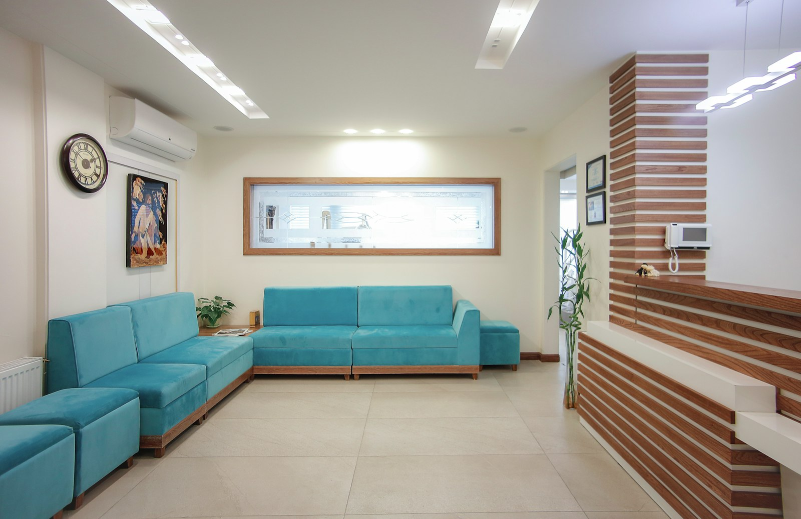
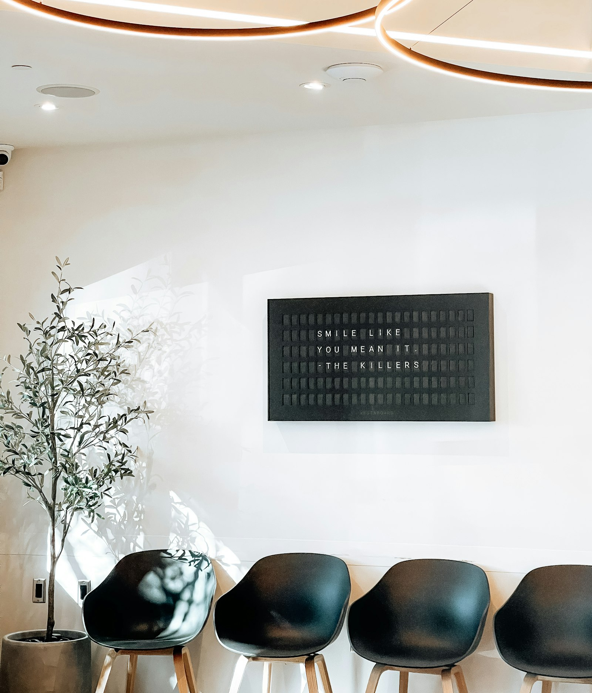

DENTISTRY
歯科
むし歯の治療から予防・審美まで、お口の健康を長い目で見守ります。「痛くなる前に通う歯医者さん」を、めざしています。
01 — SCHEDULE
| 時間帯 | 月 | 火 | 水 | 木 | 金 | 土 | 日・祝 |
|---|---|---|---|---|---|---|---|
| 午前9:00 – 12:00 | ○ | ○ | − | ○ | ○ | ○ | − |
| 午後14:00 – 18:00 | ○ | ○ | − | ○ | ○ | △ | − |
02 — MEDICAL SERVICES
歯科と皮膚科。分野はちがっても、大切にしていることは同じです。よく聴いて、よく説明して、納得いただいてから治療をはじめます。

DENTISTRY
むし歯の治療から予防・審美まで、お口の健康を長い目で見守ります。「痛くなる前に通う歯医者さん」を、めざしています。

DERMATOLOGY
湿疹・かぶれから、アトピー・ニキビの継続的なケアまで。「これくらいで受診していいのかな」という小さな気がかりこそ、ご相談ください。
03 — OUR FEATURES
「"通いやすさ"も、
医療のひとつ。
そう考えています。」
具合が悪いとき、いちばんの負担は「通うこと」そのものだったりします。予約のしやすさ、待ち時間、説明のわかりやすさ——診療の外側も、ていねいに設計しました。
家族の「ちょっと気になる」をまとめて相談できます。お子さまの歯とお肌を同じ日に、といった通い方も可能です。
写真や模型を使って現状と選択肢をご説明します。費用や期間もふくめ、ご納得いただいてから治療に進みます。
ベビーカーのまま入れる院内設計と、キッズスペースをご用意。小児歯科・小児皮膚科の経験豊富なスタッフが対応します。
Web予約は24時間受付。予約優先制で院内の混雑をおさえ、お待たせしない診療を心がけています。
04 — CLINIC PHOTOS
「病院らしくない、ほっとできる場所」をめざした院内です。はじめての方も、どうぞ緊張せずにいらしてください。



※ 写真はイメージです（テンプレートサンプルのためフリー素材を使用しています）
05 — HOW TO VISIT
はじめての方も、4つのステップでご案内します。保険証(マイナ保険証)と、お薬手帳をお持ちの方はご持参ください。
Webまたはお電話でご予約ください。予約なしでも受診いただけますが、ご予約の方を優先してご案内します。
症状やこれまでの経過をうかがいます。気になることは小さなことでも、遠慮なくお聞かせください。
写真や模型を使って現状をご説明し、治療の選択肢をご提案します。ご納得いただいてから治療に進みます。
治療計画にあわせて、次回のご予約をお取りします。各種キャッシュレス決済にも対応しています。
06 — Q&A
予約優先制です。Web予約（24時間受付）またはお電話でのご予約をおすすめしています。予約なしでも受診いただけますが、お待ちいただく場合があります。急患の方は随時対応しますので、まずはお電話ください。
各種健康保険を使用できます。保険証（マイナ保険証）をお持ちください。自費診療（審美歯科・美容皮膚科など）については、費用と内容を事前に詳しくご説明し、ご納得いただいてから行いますのでご安心ください。
クリニック前に3台分の専用駐車場をご用意しています。満車の場合は、お手数ですが近隣のコインパーキングをご利用ください。電車の場合は○○駅から徒歩5分です。
はい。小児歯科・小児皮膚科ともに対応しています。キッズスペースがあり、ベビーカーのまま院内へお入りいただけます。お子さまが安心して治療を受けられるよう、無理のないペースで進めますのでご安心ください。
07 — ACCESS
08 — RESERVATION
「これくらいで受診していいのかな」と迷ったときが、相談のタイミングです。
Web・お電話のどちらからでもご予約いただけます。
TEL — 9:00-18:0003-1234-5678
※ 水曜・日曜・祝日は休診 ／ 土曜午後は17:00まで